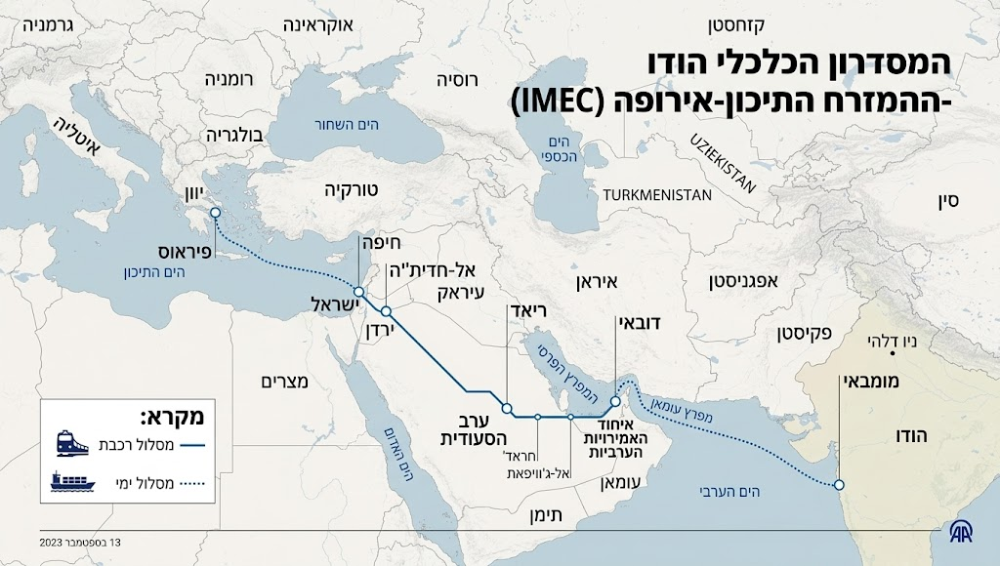
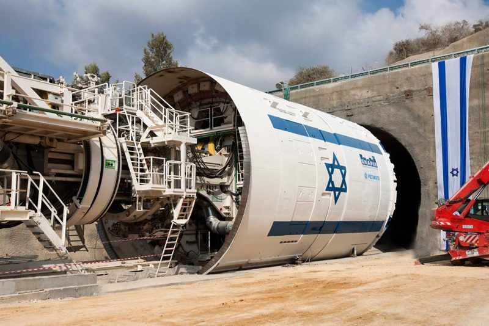
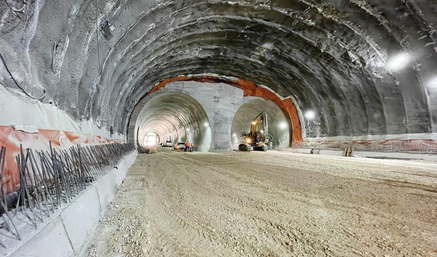

01 · גוש דן
העומס בגוש דן
ריכוז האוכלוסייה, התעסוקה, התעשייה והנדל"ן בליבת המרכז יוצר מחנק תכנוני, תחבורתי וחברתי.
חיבור ישיר, מהיר ותת-קרקעי בין מזרח גוש דן לבקעת הירדן — מהלך תשתיתי שמשנה את מפת הפיתוח של מדינת ישראל.
פרויקט "מנהרת ראש העין–פצאל" מציע מערכת מנהרות באורך של כ-35 ק"מ — הכוללת נתיבי רכב, מסילת רכבת דו-כיוונית, מערכות בטיחות, אוורור, בקרה ותשתיות משלימות. המטרה אינה רק לקצר נסיעה, אלא להפוך את בקעת הירדן מאזור קצה מנותק ל"שער המזרחי" של ישראל — אזור מעבר, ייצור, לוגיסטיקה, מגורים, תיירות וביטחון.
ריכוז האוכלוסייה, התעסוקה, התעשייה והנדל"ן בליבת המרכז יוצר מחנק תכנוני, תחבורתי וחברתי.
מרחב אסטרטגי רחב ומישורי, בעל חשיבות ביטחונית וחקלאית — אך מנותק יחסית ממרכז הכובד של המדינה.
מסדרון הודו–המפרץ–ירדן–ישראל–אירופה: נמלים, רכבות, אנרגיה ותשתיות דיגיטליות בין אסיה לאירופה.
סימביוזה בין אדם לטבע — פתיחת מרחב חיים חדש, מתוכנן וירוק, המחובר לגוש דן בזמן נסיעה קצר.
אם הבקעה תחובר למרכז בזמן של פחות מחצי שעה, היא לא תיתפס עוד כפריפריה רחוקה אלא כמרחב חיים חדש. במקום לדחוס כל מפעל, מחסן ושכונה אל תוך המרכז העמוס — נפתח מרחב מתוכנן, רחב וזול יותר.
סביב פצאל, תומר, נתיב הגדוד, ייט"ב ועוג'ה ניתן לתכנן שכונות מודרניות, מרווחות וירוקות מלכתחילה: תחבורה ציבורית, תעסוקה מקומית, בנייה ירוקה ושימוש חוזר במים.
חיבור מהיר מרחיב את היצע הקרקע הזמין למגורים בעשרות אלפי יחידות פוטנציאליות, מפחית את הלחץ על גוש דן, ויכול להשפיע לאורך זמן גם על יוקר המחיה.
הבקעה הופכת מ"מרחק" ל"כתובת" — קרקע זמינה, תכנון מודרני ומחירים נגישים, במרחק נסיעה קצר ממוקדי התעסוקה.
פתיחת עתודות קרקע חדשות מחוץ למרכז הרווי.
הקלה על שוק הדיור בגוש דן.
שכונות מרווחות, ירוקות ומחוברות.
מטרופולין המחר נבנה כמערכת אחת: ניהול חכם של מים ואנרגיה, תחבורה ציבורית כעמוד שדרה, ובנייה המייצרת יותר ממה שהיא צורכת. הקיימות אינה תוספת — היא תשתית.
מודל כלכלי פוסט-תעשייתי וזרימת הון גלובלית — כדאיות הנמדדת במכלול התועלות הלאומיות.
הכנסות מאגרות מעבר לבדן אינן מספיקות להחזיר השקעה של עשרות מיליארדי שקלים, במיוחד מול מימון חוב יקר, תחזוקה ארוכת טווח וסיכוני ביקוש. המודל הנכון הוא PPP/BOT משולב, המשלב כמה שכבות הכנסה ומימון.
"תשלומי זמינות" לזכיין, כמקובל בפרויקטים בעלי תועלת לאומית גבוהה.
לכידת חלק מעליית ערך הקרקע בבקעה ובנקודות הקצה למימון התשתית.
מימון בינלאומי אם הפרויקט יוכר כחוליה ישראלית בציר IMEC.
לרכב פרטי, רכב מסחרי ומשאיות.
רכבות מטען ונוסעים לאורך המסילה הכפולה.
אחסנה, קירור, שטחי מסחר, אנרגיה ותקשורת.
תשלומי זמינות לזכיין על בסיס התועלת הלאומית.
הכרה בפרויקט כחוליה מרכזית בציר IMEC.
לכידת ערך מעליית מחירי הקרקע סביב נקודות הקצה.
סביב פצאל והמרחב שבין צפון הבקעה לעוג'ה ניתן לפתח אזורי תעסוקה, תעשייה קלה, לוגיסטיקה, חקלאות מתקדמת, תיירות מדברית, אנרגיה סולארית, מסופי קירור ומתחמי סחר.
החיבור לציר IMEC הופך את ישראל מצרכן פסיבי של מהלכים אזוריים לשחקן מוביל בלב מסדרון כלכלי בין אסיה לאירופה.
טכנולוגיות התפלה, אנרגיה מתחדשת ו-AI בניהול משאבים — התשתית הטכנולוגית של מטרופולין המדבר.
פיתוח עירוני וחקלאי בבקעה נשען על ניהול מים מתקדם: שימוש חוזר, השבת קולחין, ובאופק — חיבור למקורות מים אזוריים. הקיימות מתחילה במים.
הבקעה היא אחד המרחבים האידיאליים בישראל לאנרגיה סולארית: שטח, קרינה ושמש לאורך כל השנה. פיתוח חדש יכול להיבנות מראש על אנרגיה נקייה ואגירה.
ניהול מנהרה באורך 35 ק"מ ומטרופולין שלם דורש שליטה חכמה: ניטור סיסמי, בקרת אוורור ועשן, ניהול תנועה, ואופטימיזציה של מים ואנרגיה בזמן אמת.
הגאופוליטיקה של השלום והחיבור בין יבשות — ישראל בלב מסדרון הסחר הבין-יבשתי.
מזכר ההבנות של IMEC מתאר מעבר סחורות בין הודו, איחוד האמירויות, סעודיה, ירדן, ישראל ואירופה — לצד תשתיות דיגיטליות, חשמל ומימן נקי לאורך הציר. בפברואר 2025 חזרו הודו והאיחוד האירופי על מחויבותם לנקוט "צעדים קונקרטיים" למימוש המסדרון.
המנהרה היא החוליה הישראלית הפיזית שמחברת את הבקעה — ודרכה את הציר — אל נמלי הים ומרכז הארץ.

IMEC עדיין תלוי ביציבות אזורית, בהסכמות מדיניות ובתכנון הנדסי-פיננסי מפורט. דווקא משום כך על ישראל להכין מראש את התשתית שתהפוך אותה משחקן פסיבי לשחקן מוביל.
נוכחות אזרחית וכלכלית חזקה במזרח יוצרת ביטחון מסוג אחר: היא הופכת גבול למרחב חי, יצרני ומיושב.
בקעת הירדן יכולה להפוך מאזור קצה מנותק לשער המזרחי — אזור מעבר, ייצור, לוגיסטיקה, מגורים, תיירות וביטחון. שלושת האינטרסים הלאומיים נפגשים בה: ביטחון גבול מזרחי, פיתוח עתודות קרקע, וחיבור לציר סחר גלובלי.
מודלים של ROI חברתי וכלכלי, שלבי פיתוח טכניים, ותכנון לפי סטנדרטים בינלאומיים.
נכון לראות את הפרויקט כמערכת הכוללת כמה חללים נפרדים או מקבילים: מנהרות כביש חד-כיווניות לשני כיוונים, חלל מסילתי עצמאי לרכבת נוסעים ומטענים, מעברי חירום, אוורור, ניקוז, כיבוי אש, תקשורת, ניטור סיסמי ובקרה תפעולית.


תוואי הנדסי, סקר גאולוגי, אומדן עלויות וחלופות מנהור.
גיבוש PPP/BOT, הערכת השבחת קרקע ובחינת מימון אזורי.
תיאום עם מסילות ישראל, נמלי הים וציר IMEC.
כרייה, מערכות בטיחות, מסילות ומסופי קצה.
פתיחת המנהרה ופריחת המטרופולין המזרחי.
אומדן עבודה ראשוני נע בטווח של כ-20–30 מיליארד ש"ח, בהתאם לחלופות התכנון: מספר מנהרות, עומק כרייה, מורכבות גאולוגית, מערכות בטיחות, מסילות, הפקעות ומסופי קצה. זהו אומדן מוקדם בלבד שאינו מחליף בדיקת היתכנות.
ה-ROI האמיתי הוא לאומי: הפחתת גודש, מיתון מחירי דיור, צמיחת תעסוקה, חיזוק הגבול המזרחי, וצמצום פגיעה עילית בנוף בזכות המנהור.
תעלת הימים, אגמים מלאכותיים ושינוי מיקרו-אקלימי — חזון אקולוגי ארוך-טווח לבקעה.
חזון תעלת הימים משלים את מהלך התשתית: הזרמת מים והפקת אנרגיה לאורך הציר המזרחי, כבסיס לפיתוח אקולוגי וכלכלי. המים הם המנוף שהופך מדבר למרחב חי.
חזון ארוך-טווח, המחייב בחינת היתכנות הנדסית, סביבתית ומדינית נפרדת.
אגמים מלאכותיים מתוכננים יכולים לשמש לוויסות מים, תיירות מדברית, נופש ואקלים מקומי — ולהפוך נקודות קצה לנקודות משיכה.
שילוב של גופי מים, שטחים ירוקים ובנייה מתוכננת יכול להשפיע על המיקרו-אקלים: מיתון חום, הגדלת לחות והפיכת המרחב לנעים יותר למגורים ולחקלאות.
הפיתוח נשען על עקרונות ירוקים: אנרגיה סולארית, שימוש חוזר במים ובנייה ירוקה — כך שהמהפכה הכחולה משלימה את המהפכה הירוקה.
הצטרפות ליוזמה ומפת דרכים ל-2050 — הצעד הבא הוא בדיקת היתכנות ממשלתית מלאה.
מנהרת ראש העין–פצאל היא הצעה לשינוי מבנה המדינה: ממדינה שמרכזה מתכווץ תחת עומס — למדינה בעלת ציר מזרחי חדש; מבקעה מרוחקת — לבקעה מחוברת ומשגשגת; ומישראל בקצה נתיבי הסחר — לישראל בלב מסדרון כלכלי בין אסיה לאירופה.
הצטרפו ליוזמה, שתפו את החזון, ועזרו לקדם את בדיקת ההיתכנות הלאומית.
תוואי, סקר גאולוגי, אומדן עלויות וחלופות מנהור.
גיבוש PPP/BOT, השבחת קרקע, השפעות סביבתיות ושילוב מסילות.
כרייה, מערכות בטיחות, מסילות ומסופי קצה.
ציר מזרחי חי — מגורים, תעסוקה, סחר וביטחון.